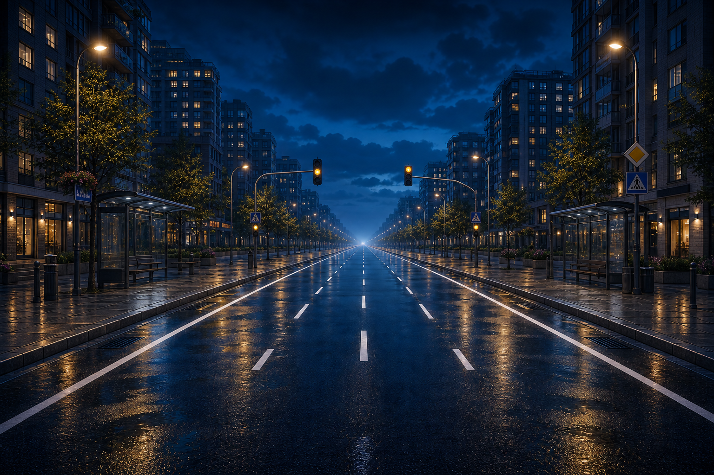
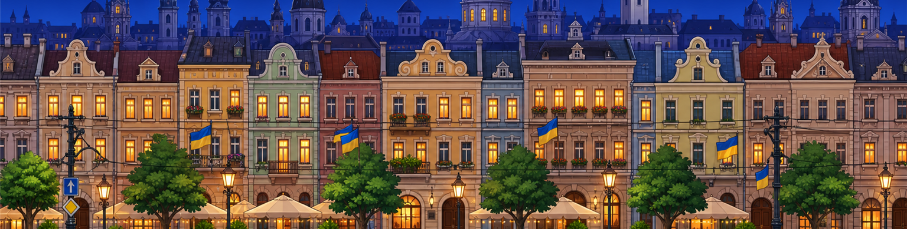

Рівні й райони
Київські та львівські маршрути з власними деталями, місіями й настроєм.
Український браузерний раннер
Біжи крізь нічний Київ і атмосферний Львів, збирай монети, відкривай райони, виконуй місії та тримай темп до фінішу.
Київські та львівські маршрути з власними деталями, місіями й настроєм.
Андрій і Марічка мають повну анімацію бігу, стрибка, слайду й зміни смуг.
Український HUD, репліки, субтитри та міські підказки без чужих заглушок.
Міста

Мокрий асфальт, вогні, нічний skyline і широкі смуги для швидкого раннер-геймплею.

Ратуша, бруківка, гірлянди, історичні кам'яниці та львівські дрібниці на фоні.
Особливості
Збір монет, дистанція, секретні маршрути й події на рівнях.
Щит, магніт, рюкзак, супер-стрибок і зброя для небезпечних моментів.
Меню, колекції та ігрові написи підготовлені для перемикання мов.
Canvas масштабується під різні екрани, зберігаючи читабельність UI.
Оновлення